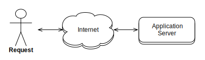
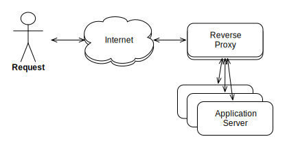
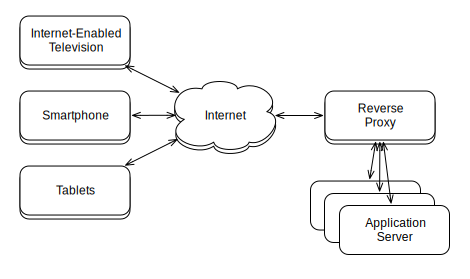
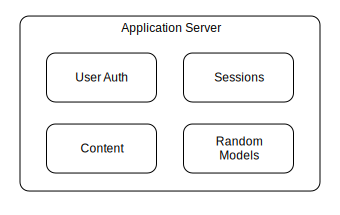
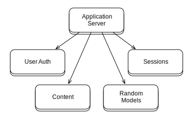
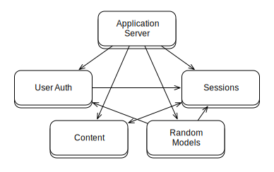

Modern HTTP Architecture
HTTP ALL THE THINGS!
A talk by Travis Swicegood / @tswicegood
House Keeping
Questions: Ask Them
Twitter!
@tswicegood | #modhttp
Slides are Online
Link at the end, so hold your horses
Texas Tribune

What's it about?
Web/HTTP
Theory
Traditional Architecture
One Server
Server Pool
Benefits
Easy to scale
Predictable
What's wrong with this?
Efficient Scaling?
One Application Server
What Happens Here?
Solutions?
Small, Simple, Working Together
Write programs that do one thing and do it well. Write programs to work together. Write programs to handle text streams, because that is a universal interface.
Writeprogramsthat do one thing and do it well. Writeprogramsto work together. Writeprogramsto handletext streams, because that is a universal interface.
Write web services that do one thing and do it well. Write web services to work together. Write web services to handle JSON data, because that is a universal interface.
What's it look like?
Old Style
New Style
Realistic New Style
What's it called?
Service Oriented Architecture
SOA: Been around for years
Enterprise Ready!
Don't Be Afraid
You Already Use It
Did you code your own database?
Or your cache server?
Start thinking about your code that way
Benefits
Replace Services At Will
Use Right Tool
Scale Services Separately
Implementation Details
Not as Easy
Requires More Planning
Refactoring Isn't Trivial
What about HTML?
HaaS
HTML as a Service
Software
Nginx
Varnish
Build Your Own!
Ask me about Gunny @ Ginger Man